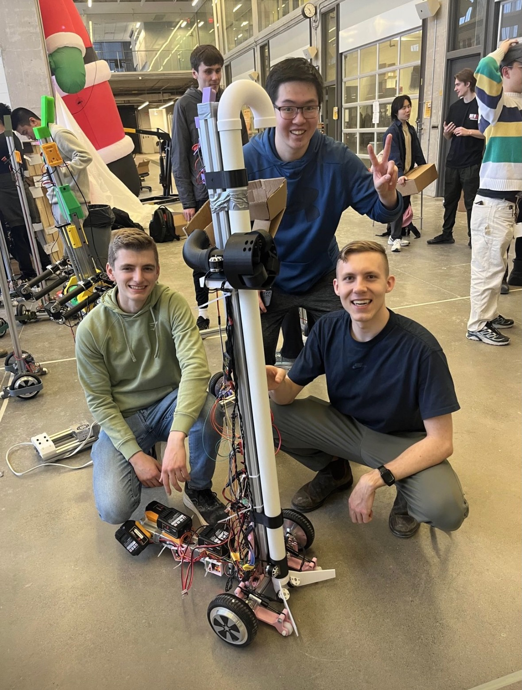
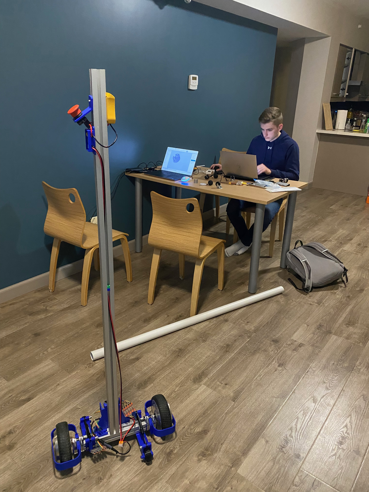

Built at a physical robotics hackathon, this autonomous robot uses a YOLO computer vision model to detect
and track people in real time, then drives toward them and fires squash balls at high velocity. The launcher
features a custom ball pickup mechanism that feeds into a 3-flywheel shooter designed to put spin on the
ball — theoretically capable of 100+ MPH. We didn't quite hit that before the hackathon ended, but the full
system — vision, locomotion, pickup, and shooter — all came together. Built on the BracketBot ecosystem
(self-balancing two-wheeled base).


Key Features
- YOLO Person Detection: Real-time person detection and tracking using a YOLO model — the robot locks onto a target and autonomously drives toward them.
- 3-Flywheel Launcher: Triple-flywheel shooter mechanism designed to put spin on squash balls for a more accurate, high-velocity shot. Theoretically capable of 100+ MPH.
- Ball Pickup Mechanism: Integrated pickup system automatically collects squash balls from the ground and feeds them into the launcher — fully hands-free operation.
- BracketBot Base: Self-balancing two-wheeled mobile platform for stable, agile locomotion across the hackathon floor.
- Hackathon Build: Complete system — computer vision, navigation, ball pickup, and high-velocity shooter — designed and assembled under time pressure at a physical robotics hackathon.
Back to Portfolio